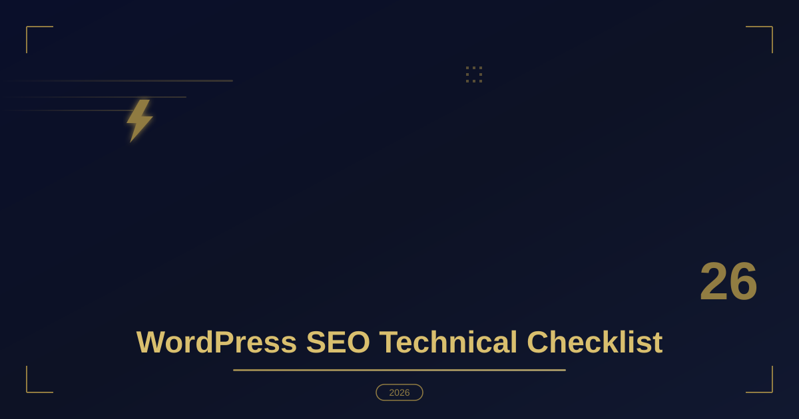

WordPress SEO Technical Checklist
Table of Contents
- 1. Clean Up Head Bloat & Reduce DOM Size
- 2. Enforce Proper Schema Markup (Structured Data)
- 3. Optimize Core Web Vitals & Asset Loading
- 4. XML Sitemaps, Robots.txt, and Crawl Directives
- 5. Canonical URLs and Duplicate Content Control
- 6. Image and Media SEO That Crawlers Understand
- 7. Internal Linking and URL Architecture
- 8. Common Technical SEO Mistakes
- 9. The Monthly Technical SEO Audit
- Frequently Asked Questions
Namaste! I'm Shiv Parmar, a passionate WordPress developer with global experience. Over the last several years building custom themes, plugins, and high-speed performance websites for clients globally, I've learned a fundamental truth: great SEO isn't just about tweaking meta titles or stuffing keywords into blog posts. It starts in the codebase.
Too often, site owners install an SEO plugin like Yoast or Rank Math, green-light every indicator, and assume their technical SEO is complete. However, plugins can only go so far. If your theme code is bloated, your database is slow, or your dynamic markup is broken, search engines will penalize your rankings.
In this post, I am sharing my personal WordPress SEO Technical Checklist—the exact developer-level audit process I run on every custom build to guarantee lightning-fast crawlability, clean indexation, and top-tier Core Web Vitals performance.
1. Clean Up Head Bloat & Reduce DOM Size
WordPress loads a lot of legacy scripts, emojis, and inline styles in the <head> section by default. Eliminating these unnecessary assets improves parsing time for search engine bots and speeds up rendering for real visitors.
Add this snippet to your custom plugin or theme's functions.php file to strip away default core clutter:
// Remove WordPress header clutter for cleaner markup
add_action('init', function() {
// Remove emoji scripts and styles
remove_action('wp_head', 'print_emoji_detection_script', 7);
remove_action('wp_print_styles', 'print_emoji_styles');
// Remove RSD link, WLW Manifest, and shortlinks
remove_action('wp_head', 'rsd_link');
remove_action('wp_head', 'wlwmanifest_link');
remove_action('wp_head', 'wp_shortlink_wp_head');
// Remove WordPress version number (security + micro-optimization)
remove_action('wp_head', 'wp_generator');
});
By removing these unused nodes, you decrease your HTML document size, which directly helps reduce Time to First Byte (TTFB) and DOM depth.
2. Enforce Proper Schema Markup (Structured Data)
While plugins generate basic Schema, custom post types or complex layouts often require precise JSON-LD structured data. Adding structured data helps search engines understand your content contextually, unlocking rich snippets in Google search results. If you have not gone past plugin defaults yet, my guide on how to add schema markup to WordPress covers the full setup before you drop into raw JSON-LD.
Here is how I inject custom JSON-LD schema dynamically into the <head> section for single blog posts using PHP:
// Inject dynamic Article Schema into post header
add_action('wp_head', 'shiv_add_custom_article_schema');
function shiv_add_custom_article_schema() {
if (is_single()) {
global $post;
$author_id = $post->post_author;
$schema = [
'@context' => 'https://schema.org',
'@type' => 'BlogPosting',
'headline' => get_the_title(),
'datePublished' => get_the_date('c'),
'dateModified' => get_the_modified_date('c'),
'author' => [
'@type' => 'Person',
'name' => get_the_author_meta('display_name', $author_id)
],
'publisher' => [
'@type' => 'Organization',
'name' => get_bloginfo('name'),
'logo' => [
'@type' => 'ImageObject',
'url' => get_template_directory_uri() . '/assets/images/logo.png'
]
]
];
echo '<script type="application/ld+json">' . wp_json_encode($schema, JSON_UNESCAPED_SLASHES | JSON_PRETTY_PRINT) . '</script>';
}
}
3. Optimize Core Web Vitals & Asset Loading
Google explicitly uses Core Web Vitals (LCP, FID/INP, and CLS) as ranking signals. As WordPress developers, our job is to ensure JavaScript and CSS delivery do not block visual rendering.
Here is what each metric actually measures, and where WordPress sites most often fail:
- LCP (Largest Contentful Paint) — typically the hero image or the main heading. Failures come from unoptimized featured images, render-blocking stylesheets, and slow server response times.
- INP (Interaction to Next Paint) — the successor to FID and the metric I see WordPress sites fail most often in 2026. Oversized DOM trees and long JavaScript tasks are the usual culprits; I break the fix down in my INP optimization guide.
- CLS (Cumulative Layout Shift) — caused by images, iframes, and ad slots that ship without explicit width and height attributes, plus banners injected late into the layout.
Two code-level fixes eliminate a surprising amount of this. First, defer anything that is not needed for first paint, and preload the image Google is going to score as your LCP element:
// Defer non-critical third-party scripts
add_action('script_loader_tag', function ($tag, $handle, $in_footer) {
$defer_list = ['legacy-slider', 'chat-widget', 'popup-builder'];
if (in_array($handle, $defer_list, true)) {
return str_replace(' src=', ' defer src=', $tag);
}
return $tag;
}, 10, 3);
// Preload the LCP image on single posts
add_action('wp_head', function () {
if (!is_singular('post')) {
return;
}
$id = get_queried_object_id();
if (has_post_thumbnail($id)) {
$url = get_the_post_thumbnail_url($id, 'large');
printf('<link rel="preload" as="image" href="%s">' . "\n", esc_url($url));
}
}, 5);
Second, audit the rendered DOM: every node you removed in section one shrinks parse time, and every kilobyte of deferred JavaScript gives the main thread more room to respond to clicks. Pair these fixes with a solid page cache — my caching plugin comparison shows which plugins defer JavaScript most intelligently in 2026.
4. XML Sitemaps, Robots.txt, and Crawl Directives
Indexation begins with telling crawlers exactly what to read. WordPress generates a default sitemap at /wp-sitemap.xml that covers posts, pages, and categories out of the box. For most marketing sites that is perfectly sufficient; for large WooCommerce catalogs or membership sites, an SEO plugin's sitemap lets you exclude thin taxonomies and keep the file under a sane URL count.
robots.txt is where many sites quietly leak crawl budget. This is the file I deploy by default:
User-agent: *
Disallow: /wp-admin/
Allow: /wp-admin/admin-ajax.php
Disallow: /?s=
Disallow: /cart/
Disallow: /checkout/
Disallow: /my-account/
Sitemap: https://example.com/wp-sitemap.xml
Notice what is not in that file: nothing blocks /wp-content/ or /wp-includes/. A surprising number of hand-edited robots files accidentally hide JavaScript and CSS from Google, which cripples rendering and makes every page look broken to the crawler. Keep the file boring.
For pages that must stay out of the index entirely — internal search results, thin tag archives, staging previews — use the core robots meta API rather than relying only on a plugin setting:
add_filter('wp_robots', function ($robots) {
if (is_search() || is_404()) {
$robots['noindex'] = true;
$robots['nofollow'] = true;
}
return $robots;
});
Whatever you change, verify it the same day with the URL Inspection tool in Google Search Console — not weeks later, when traffic has already shifted and the cause is three deploys deep.
5. Canonical URLs and Duplicate Content Control
WordPress emits a self-referencing rel="canonical" on singular content, which solves the majority of duplicate-content problems automatically. The rest comes from query parameters: tracking tags, session IDs, sorting and filtering on product archives, and paginated URLs canonicalized incorrectly.
I strip tracking parameters from the canonical so a tagged newsletter link never becomes an alternate URL in Google's eyes:
// Clean tracking parameters out of the canonical URL
add_filter('wp_get_canonical_url', function ($canonical) {
if (!$canonical || strpos($canonical, '?') === false) {
return $canonical;
}
$parts = parse_url($canonical);
parse_str($parts['query'], $query);
$keep = array_filter($query, function ($key) {
return strpos($key, 'utm_') !== 0
&& !in_array($key, ['fbclid', 'gclid', 'ref'], true);
}, ARRAY_FILTER_USE_KEY);
$base = $parts['scheme'] . '://' . $parts['host'] . $parts['path'];
return $keep ? $base . '?' . http_build_query($keep) : $base;
}, 10, 1);
Three duplicate-content traps I check on every single build:
- Faceted navigation. Layered filters on product listings create near-infinite URL combinations. Decide per case whether filtered URLs receive
noindex,follow, a canonical back to the base archive, or genuinely crawlable content — my WooCommerce product filter guide weighs those trade-offs. - Pagination. Page 2 of an archive needs its own self-referencing canonical. A canonical pointing back to page 1 tells Google to discard everything beyond the first page of your best content.
- Protocol and host mismatches. A single internal link to
http://or the wrongwwwhost can split ranking signals across dozens of URLs. Force your production domain inwp-config.phpand re-check after every move — my local to production migration guide includes that exact step.
6. Image and Media SEO That Crawlers Understand
Images influence rankings twice: they determine eligibility for Google Images traffic, and they dominate Largest Contentful Paint on most pages. I treat them as one checklist item, not two.
- Name files before uploading.
wordpress-block-theme-architecture.pngoutperformsScreenshot-2026-04-11.pngevery time — file names are still parsed by image search. - Write alt text for humans. Describe what is actually in the image; if it is purely decorative, use an empty
alt=""so screen readers skip it. Keyword-stuffed alt text is both an accessibility failure and a spam signal. - Ship explicit dimensions. Every
<img>should carry width and height attributes so the browser reserves space and CLS stays near zero. - Serve modern formats. AVIF and WebP with
srcsetvariants cut image payload by thirty to sixty percent. My image optimization workflow details the compression settings I use on client sites. - Lazy-load everything except the LCP image. WordPress adds
loading="lazy"by default; strip it from the above-the-fold hero so the browser prioritizes the one image that scores against LCP.
7. Internal Linking and URL Architecture
External backlinks get the headlines, but internal links are the part of SEO you fully control. My process on every new build:
- Map the architecture before writing content. Decide which page owns each topic and make it the pillar. Every supporting article links back to its pillar, and the pillar links out to each supporting piece.
- Keep URLs short, stable, and lowercase. Change a slug after launch only with a 301 redirect in place — I keep the redirect map inside the project repository so it survives hosting moves.
- Link contextually inside content. An anchor placed inside a relevant paragraph passes significantly more relevance than a link buried in a footer or a generic "related posts" widget.
- Use descriptive anchor text. "Read the caching plugin comparison" tells Google what the destination should rank for; "click here" tells it nothing at all.
- Audit quarterly. Crawl the site, find orphan pages with zero internal inlinks, and wire them in. Most sites I audit have a handful of valuable pages that are simply unreachable.
Restructuring a live site's URL map without losing rankings is delicate work. If you would rather not risk it yourself, this is part of what my WordPress development services cover — architecture planning, redirect mapping, and post-launch monitoring included.
8. Common Technical SEO Mistakes
These five issues appear in nearly every audit I run:
- Trusting the green lights. An SEO plugin reporting "all checks passed" does not mean your canonicals are correct or that your important pages are actually indexable. Spot-check individual URLs with URL Inspection instead.
- Blocking crawlers by accident. A stray "Discourage search engines from indexing this site" left enabled after launch, or a staging robots.txt pushed to production, will silently kill a launch. Verify the live file and the reading-discussion setting before every handover.
- Ignoring 404s and redirect chains. Broken internal links and chains of three or more redirects waste crawl budget and dilute link equity. Schedule a monthly 404 review in Search Console.
- Letting plugins rewrite markup without testing. SEO plugins, caching plugins, and security plugins all touch
<head>output. Test every configuration change on staging first — my WordPress debugging workflow contains the checklist I follow. - Skip-checking hreflang on multilingual sites. One mismatched return tag or wrong locale code can de-index an entire regional subfolder, and you will not notice until a client emails you.
9. The Monthly Technical SEO Audit
You do not need an enterprise toolset to stay on top of technical SEO. This is the half-hour review I run on the first Monday of every month:
| Check | Tool | What "healthy" looks like |
|---|---|---|
| Index coverage | Google Search Console | No new "Crawled — currently not indexed" spikes |
| Core Web Vitals | PageSpeed Insights (field data) | All three metrics green on money pages |
| Crawl errors | GSC Coverage report | 4xx trending down, no new soft 404s |
| Canonicals and robots | URL Inspection | "Canonical: User-declared" matches expectation |
| Schema validity | Rich Results Test | No new validation errors after releases |
| Broken internal links | Screaming Frog (free up to 500 URLs) | Zero 404s originating from internal pages |
Fifteen to thirty minutes with this table catches the vast majority of technical regressions before they ever appear in a traffic chart. Treat it like a deployment smoke test for SEO.
Frequently Asked Questions
How often should I run a technical SEO audit on my WordPress site?
Run a light version monthly and a full crawl quarterly. The monthly pass is the six-row table above and takes about thirty minutes. Reserve the deeper audit — full crawl, log file review, and schema validation — for after major releases, redesigns, migrations, or plugin updates that touch your theme.
Do I still need an SEO plugin if I follow this entire checklist?
Usually yes, but a lighter one. This checklist handles the code-level work: head cleanup, canonicals, robots meta, and asset loading. An SEO plugin still earns its keep managing XML sitemaps, editing title and description templates per page, and providing a visual content analysis while you write. Together they cover both the infrastructure and the editorial layer.
How long does it take for technical SEO fixes to affect rankings?
Recrawling is the bottleneck, not the fix itself. Small sites often see changes within one to two weeks; large sites can take a month or longer for Googlebot to revisit affected URLs. You can accelerate verification by submitting the most important pages through URL Inspection in Search Console immediately after deploying changes.
Should I noindex my tag and archive pages?
It depends on whether those archives add unique value. If a tag page lists three posts and offers no original introduction, it is thin content and noindex is the right call. If your archives are curated landing pages with intro text and real search demand, keep them indexable and link to them internally. Judge each archive type on its own merits rather than applying a blanket rule.
What is the fastest way to check if Google is indexing my pages?
Use the site: operator in Google Search (site:example.com) for a quick sanity check, then confirm any single URL precisely with URL Inspection in Google Search Console. The Search Console report is authoritative because it reflects Google's actual processing, including canonical selection and any noindex directives it encountered.